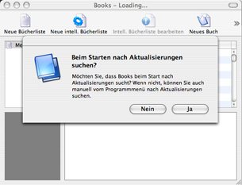

New Users
The Books interface has been intentionally crafted to work in the same familiar ways that you use other applications such as Mail and iTunes.
When you start Books, you will be asked whether you'd like to have Books look for updates online. This feature allows you to be notified of new releases and it also installs the new versions for you. If you decide to not do this, Books will not be adversely affected in any way.
